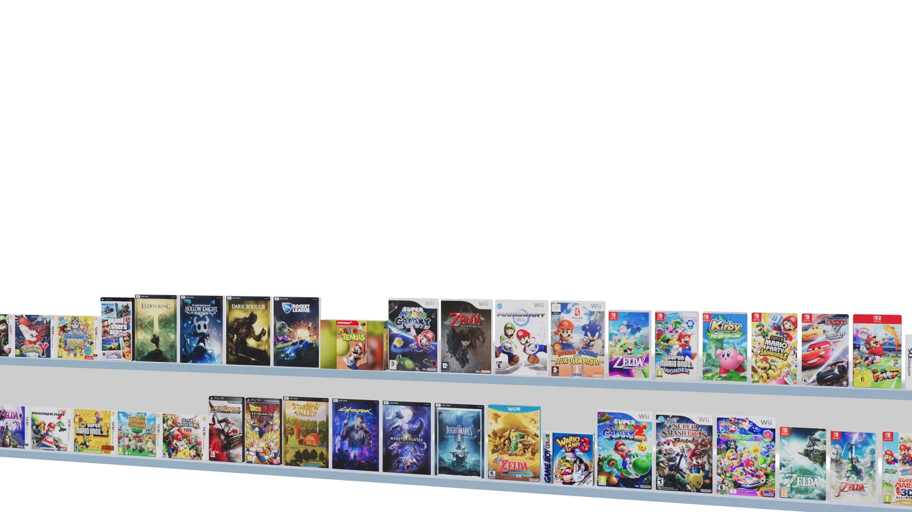
Vos jeux méritent mieux qu’une liste.
iBox range vos jeux PC et consoles dans de vrais boîtiers 3D, sur une étagère qui vit.
Cliquez un boîtier.
Prenez-le en main.
- La faceLa jaquette d’origine.
- La trancheCelle qu’on cherche du doigt.
- Le dosRésumé, captures, code-barres.
- OuvertSur sa vraie charnière.
- Le disqueIl sort, il tourne.
- Le livretLe manuel, quand il existe.
Super Mario Galaxy, Wii. Faites-le tourner.
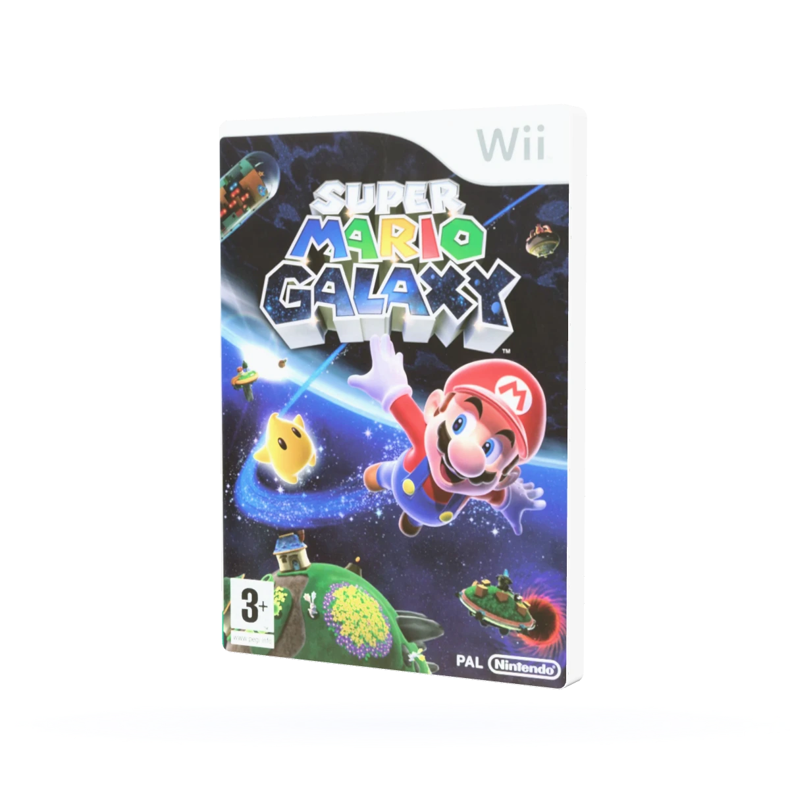
La faceLa jaquette d’origine. La trancheCelle qu’on cherche du doigt.
La trancheCelle qu’on cherche du doigt. Le dosRésumé, captures, code-barres.
Le dosRésumé, captures, code-barres. OuvertSur sa vraie charnière.
OuvertSur sa vraie charnière.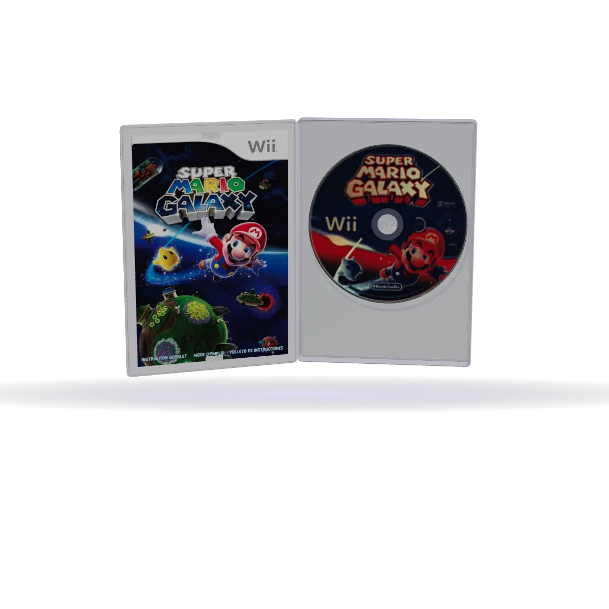
Le disqueIl sort, il tourne.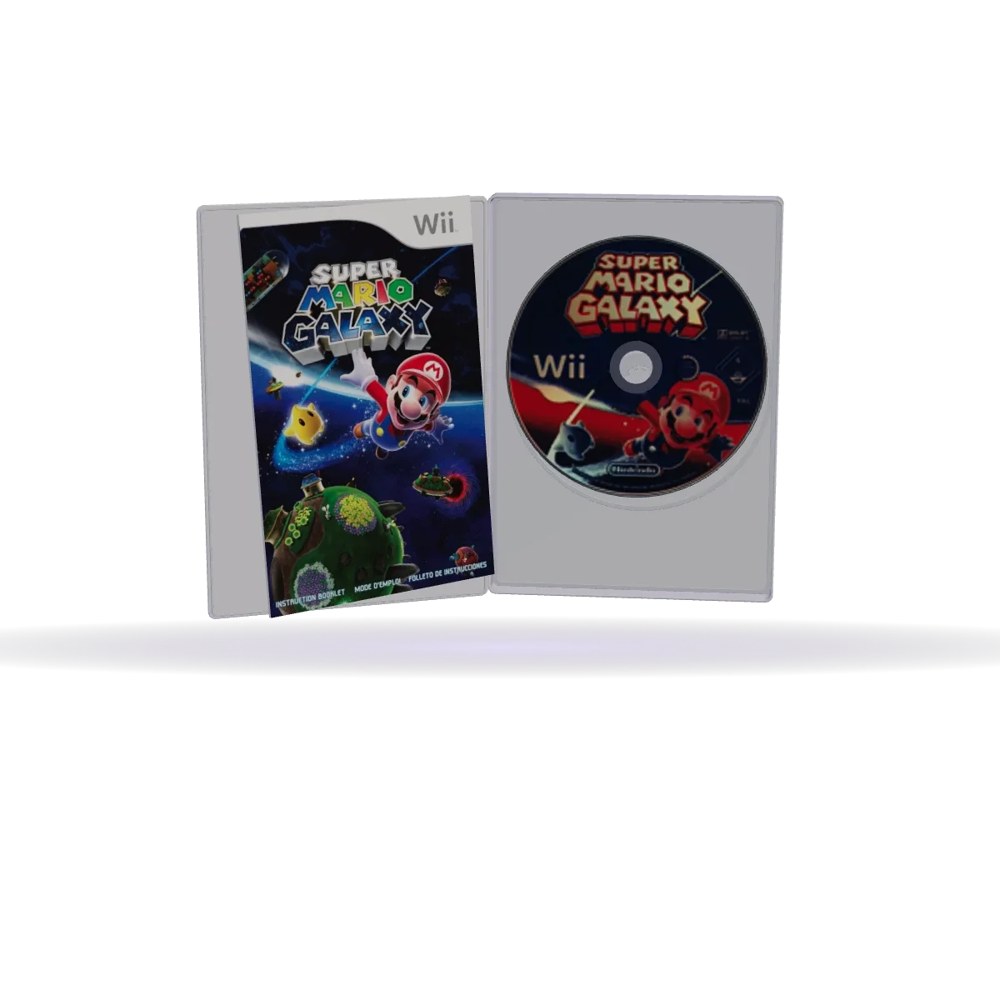
Le livretLe manuel, quand il existe.
Un fond pour chaque humeur.
Habillez votre accueil avec l’illustration de n’importe quel jeu. Survolez un boîtier.
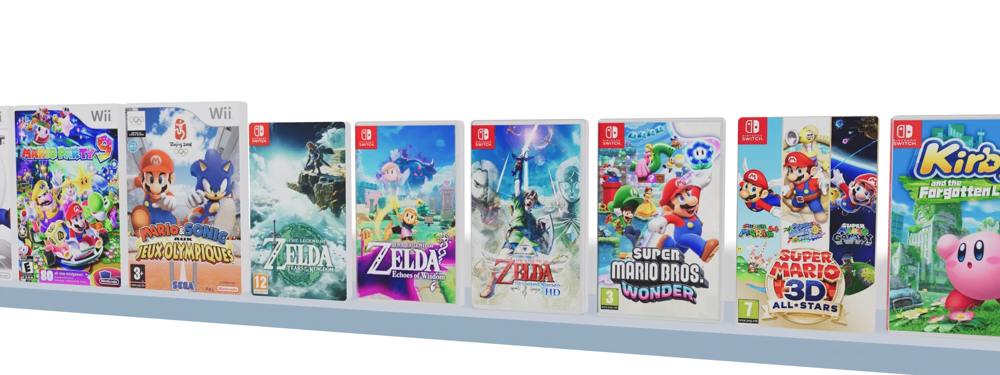
Kirby and the Forgotten Land
Des collections à votre image.
Par époque, par couleur, par humeur : chaque collection choisit son style, son icône et son fond.
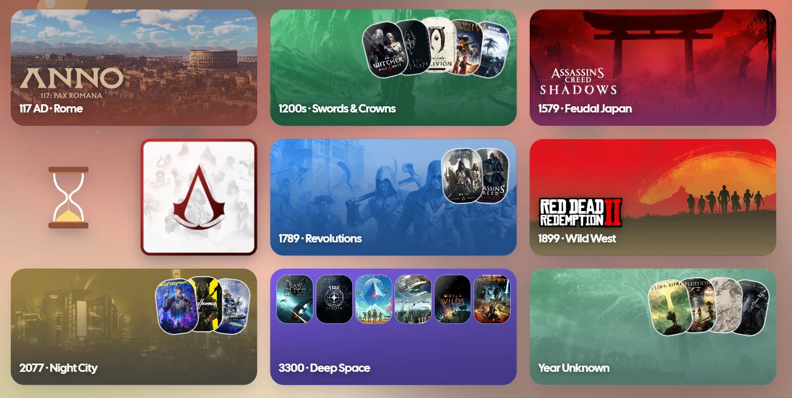
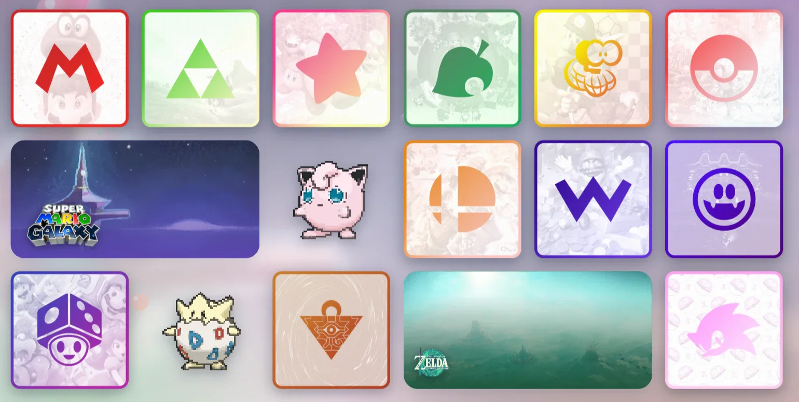
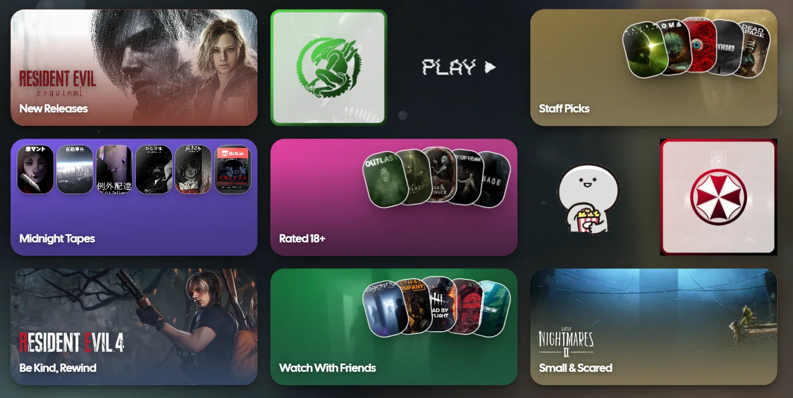
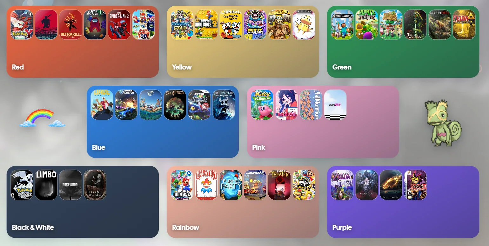
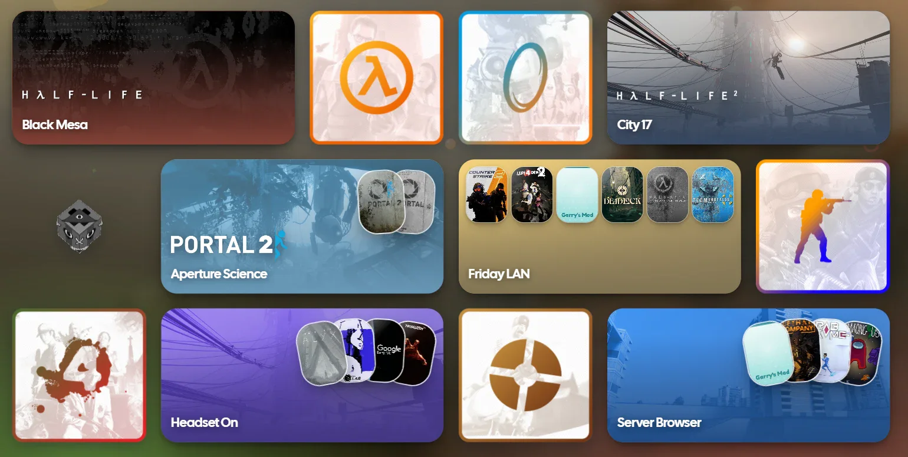
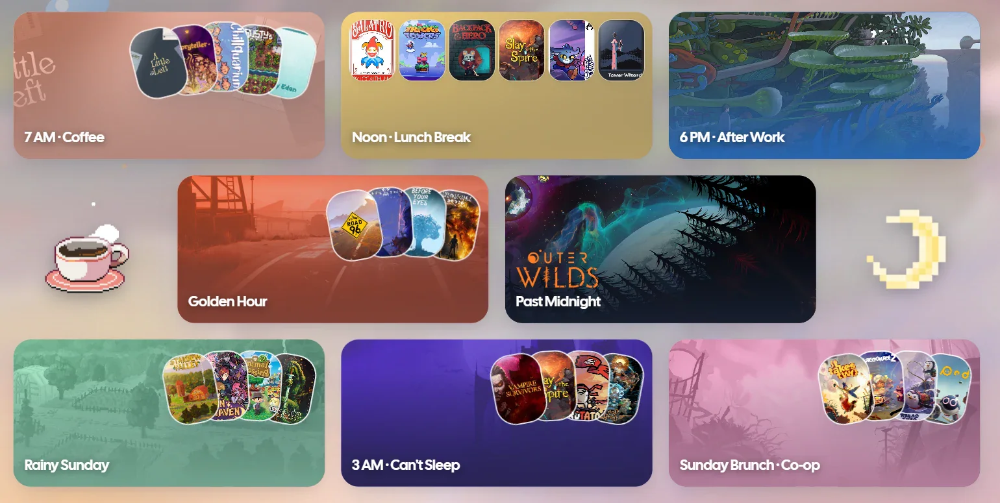
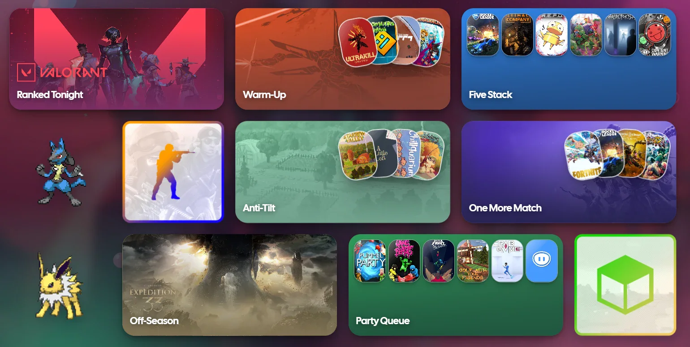
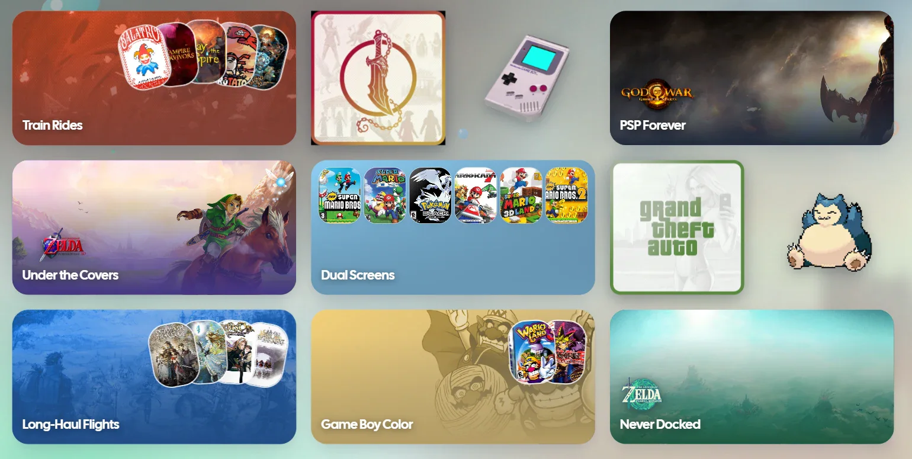
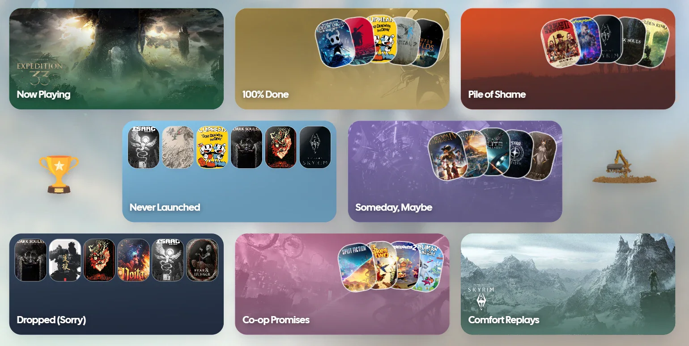
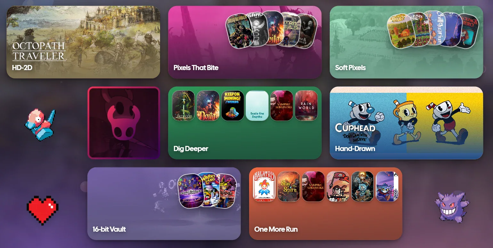
iBox s’occupe du reste.
iBox Platforms
Choisissez une console : iBox télécharge son émulateur depuis la source officielle et l’installe pour vous. 26 consoles.


Vos jeux PC
Steam, Epic Games et GOG, retrouvés tout seuls, avec votre temps de jeu.
SmartConfig
Des réglages taillés pour votre PC, jeu par jeu, et toujours un retour arrière.
iNetbox
Vos amis dans iBox : qui joue à quoi, invitations, messages, captures partagées. Et le Remote Play pour jouer ensemble à distance (expérimental).
À la manette
Toute l’interface se pilote du canapé.
Chaque geste a son son
Composés pour iBox, synthétisés en direct. Écoutez :
Votre collection vous attend.
Sur votre PC, votre Steam Deck, et bientôt vos appareils Android.
Gratuit et open source, sans compte ni publicité.